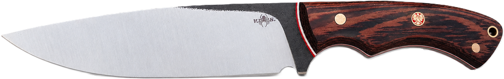
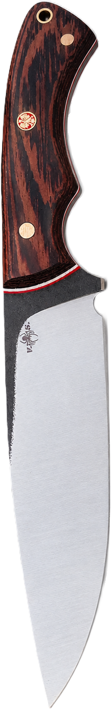

Każdy egzemplarz jedzie do klienta ze swoimi wymiarami. Ten jest jeden — drugiego takiego nie będzie.

Pomiary suwmiarką, egzemplarz po egzemplarzu
Stal wychodzi z ognia raz. To, co z niej zostanie, zależy od kilkuset uderzeń i jednej pary rąk.

Warsztat · Polska
Przesuń kursorem po ostrzu
Stal wychodzi z ognia raz. To, co z niej zostanie, zależy od kilkuset uderzeń i jednej pary rąk.